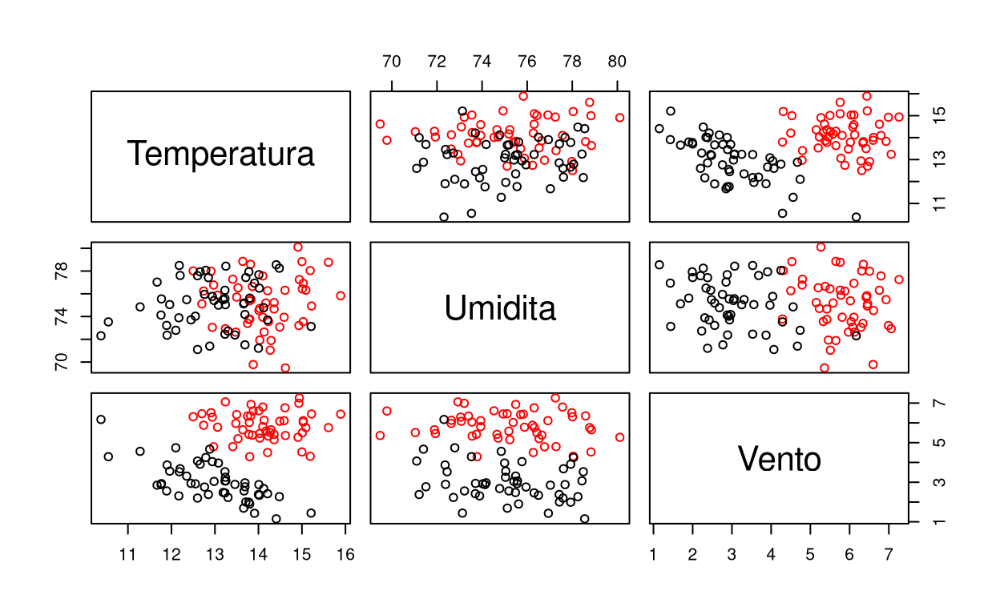

Hypothesis Testing and Anova
Two-Sample Z tests for comparing the means (unpaired)
Data Import
We import the data
t1 <- read.table(file = "../data/barcellona.txt", header = TRUE)
t2 <- read.table(file = "../data/milano.txt", header = TRUE)
p <- dim(t1)[2]
n1 <- dim(t1)[1]
n2 <- dim(t2)[1]and plot them.
plot(rbind(t1, t2), col = c(rep("red", n1), rep("black", n2)))
Hypothesis
We select the level of significance
alpha <- 0.01and the null hypothesis.
delta.mean.H0 <- 0We then compute the estimate of the difference between the means
(delta.mean.est <- mean(t1[, "Temperatura"]) - mean(t2[, "Temperatura"]))## [1] 1.1556and estimate the standard deviation (if it is not known)
(sd.est <- sqrt(var(t1[, "Temperatura"]) / n1 + var(t2[, "Temperatura"]) / n2))## [1] 0.1789074We compute the Z-test statistic
(zstat <- (delta.mean.est - delta.mean.H0) / sd.est)## [1] 6.459207and compute the boundaries of the rejection region.
(cfr.z <- qnorm(1 - alpha / 2))## [1] 2.575829We check if this leads to the rejection of \(H_{0}\) or not
abs(zstat) > cfr.z## [1] TRUEand compute the p-value.
(pvalue <- ifelse(zstat >= 0, (1 - pnorm(zstat)) * 2, pnorm(zstat) * 2))## [1] 1.052534e-10We finally compute the two-sample Z intervals for comparing the means (unpaired)
CI <- c(
inf = delta.mean.est - sd.est * qnorm(1 - alpha / 2),
center = delta.mean.est,
sup = delta.mean.est + sd.est * qnorm(1 - alpha / 2)
)
kable(CI)| x | |
|---|---|
| inf | 0.694765 |
| center | 1.155600 |
| sup | 1.616435 |
Multivariate two-sample tests for comparing the means (unpaired)
We consider a component-wise testing approach: an adjusted two-sample Z test for comparing the means (unpaired).
We select the level of signficance,
alpha <- 0.01the null hypothesism
delta.mean.H0 <- c(0, 0, 0)we compute three estimates of the three differences of the means.
(delta.mean.est <- colMeans(t1) - colMeans(t2))## Temperatura Umidita Vento
## 1.1556 0.0834 2.8426After that, we estiamte the standard deviations of the three estimates (if unkwonw),
(sd.est <- sqrt(apply(t1, 2, var) / n1 + apply(t2, 2, var) / n2))## Temperatura Umidita Vento
## 0.1789074 0.4551523 0.1712409we compute the Z-test statistics,
(zstat <- (delta.mean.est - delta.mean.H0) / sd.est)## Temperatura Umidita Vento
## 6.4592065 0.1832354 16.6000053adjust the level of signficance (e.g. Bonferroni adjustment);
(alpha.adj <- alpha / p)## [1] 0.003333333we compute the boundaries of the rejection regions,
(cfr.z <- qnorm(1 - alpha.adj / 2))## [1] 2.935199check if the boundaries lead to the rejection of \(H_0\) or not,
abs(zstat) > cfr.z## Temperatura Umidita Vento
## TRUE FALSE TRUEcompute the p-value,
(pvalue <- ifelse(zstat >= 0, (1 - pnorm(zstat)) * 2, pnorm(zstat) * 2))## Temperatura Umidita Vento
## 1.052534e-10 8.546133e-01 0.000000e+00the adjusted p-value,
(pvalue.adj <- pmin(pvalue * p, 1))## Temperatura Umidita Vento
## 3.157601e-10 1.000000e+00 0.000000e+00and finally show the adjusted two-sample Z intervals for comparing the means (unpaird) (e.g. Bonferroni intervals)
CI <- cbind(
inf = delta.mean.est - sd.est * qnorm(1 - alpha.adj / 2),
center = delta.mean.est,
sup = delta.mean.est + sd.est * qnorm(1 - alpha.adj / 2)
)
kable(CI)| inf | center | sup | |
|---|---|---|---|
| Temperatura | 0.630471 | 1.1556 | 1.680729 |
| Umidita | -1.252563 | 0.0834 | 1.419363 |
| Vento | 2.339974 | 2.8426 | 3.345226 |
Global Testing Approach (Hotelling’s test)
We now approach the issue by using a global testing approach, namely Hotelling’s test.
We select the level of signficance,
alpha <- 0.01choose the null hypothesis (a vector in \(\mathbb{R}^3\)).
delta.mean.H0 <- c(0, 0, 0)compute three estimates of the the three differences of the means (again, a vector in \(\mathbb{R}^3\)),
(delta.mean.est <- colMeans(t1) - colMeans(t2))## Temperatura Umidita Vento
## 1.1556 0.0834 2.8426we estimate the covariance matrix (a matrix in \(\mathbb{R}^{3 \times 3}\)).
(cov.est <- cov(t1) / n1 + cov(t2) / n2)## Temperatura Umidita Vento
## Temperatura 0.032007866 0.009470245 -0.01405717
## Umidita 0.009470245 0.207163625 -0.01726915
## Vento -0.014057166 -0.017269154 0.02932345We then compute the \(\chi^{2}\)-test statistic,
(chi2stat <- (delta.mean.est - delta.mean.H0) %*% solve(cov.est) %*% (delta.mean.est - delta.mean.H0))## [,1]
## [1,] 540.1665compute the boundary of the elliptical rejection region,
(cfr.chi2 <- qchisq(1 - alpha, p))## [1] 11.34487check if this leads to the rejection of \(H_{0}\) or not
chi2stat > cfr.chi2## [,1]
## [1,] TRUEand compute the p-value.
(pvalue <- 1 - pchisq(chi2stat, p))## [,1]
## [1,] 0Moreover, we show the \(\chi^2\) confide:nce region for comparing the means (unpaired). They can’t be visualised whenever \(p > 3\). We are interested in checking the shades along the three axes (i.e., simultaneous confidence intervals)
CI.sim <- cbind(
inf = delta.mean.est - sd.est * sqrt(qchisq(1 - alpha, p)),
center = delta.mean.est,
sup = delta.mean.est + sd.est * sqrt(qchisq(1 - alpha, p))
)
kable(CI.sim)| inf | center | sup | |
|---|---|---|---|
| Temperatura | 0.5530015 | 1.1556 | 1.758198 |
| Umidita | -1.4496505 | 0.0834 | 1.616451 |
| Vento | 2.2658239 | 2.8426 | 3.419376 |
One-Way ANOVA
Introduction
We load the data. We have \(p = 1\) and \(g = 6\).
chickwtssummary(chickwts)## weight feed
## Min. :108.0 casein :12
## 1st Qu.:204.5 horsebean:10
## Median :258.0 linseed :12
## Mean :261.3 meatmeal :11
## 3rd Qu.:323.5 soybean :14
## Max. :423.0 sunflower:12We build the vector of responses (e.g. weight) and the vector of treatment levels (e.g. feed type)
response <- chickwts[, "weight"]
treatment <- chickwts[, "feed"]We compute the sample size,
n <- length(response)the treatment group sample sizes
ng <- table(treatment)and the number of treatments.
treatment.levels <- levels(treatment)
g <- length(treatment.levels)We also plot the treatment groups.
boxplot(response ~ treatment)
Computing ANOVA
We wish to test for the equality of the \(g\) means of the treatment groups:
- $H_{0}: \, \tau_{1} = \tau_{2} = \tau_{3} = \tau_{4} = 0$
- $H_{1}: \, H_{0}^c$We compute the estimates of the \(g\) means under the null hypothesis,
rep(mean(response), g)## [1] 261.3099 261.3099 261.3099 261.3099 261.3099 261.3099and we compute the estimates of the six means under the alternative hypothesis. Note that these are valid (albeit sub-optimal) estimates even under the null hypothesis.
tapply(response, treatment, mean)## casein horsebean linseed meatmeal soybean sunflower
## 323.5833 160.2000 218.7500 276.9091 246.4286 328.9167We perform the ANOVA decomposition.
fit <- aov(response ~ treatment)
summary(fit)## Df Sum Sq Mean Sq F value Pr(>F)
## treatment 5 231129 46226 15.37 5.94e-10 ***
## Residuals 65 195556 3009
## ---
## Signif. codes: 0 '***' 0.001 '**' 0.01 '*' 0.05 '.' 0.1 ' ' 1And we perform pairwise comparision (e.g. Bonferroni). We need to make \(g \dot \frac{g - 1}{2}\) comparisons.
mean.est.matrix <- matrix(NA, nrow = g, ncol = g, dimnames = list(treatment.levels, treatment.levels))
zstat.matrix <- matrix(NA, nrow = g, ncol = g, dimnames = list(treatment.levels, treatment.levels))
pvalue.matrix <- matrix(NA, nrow = g, ncol = g, dimnames = list(treatment.levels, treatment.levels))
pvalue.adj.matrix <- matrix(NA, nrow = g, ncol = g, dimnames = list(treatment.levels, treatment.levels))
for (i in 1:(g - 1)) {
for (j in (i + 1):g) {
test.ij <- t.test(response[treatment == treatment.levels[i]], response[treatment == treatment.levels[j]])
mean.est.matrix[i, j] <- diff(test.ij$estimate)
zstat.matrix[i, j] <- test.ij$statistic
pvalue.matrix[i, j] <- test.ij$p.value
pvalue.adj.matrix[i, j] <- min(test.ij$p.value * (g * (g - 1) / 2), 1)
}
}We now plot the pairwise estimated differences of the means,
(mean.est.matrix)## casein horsebean linseed meatmeal soybean sunflower
## casein NA -163.3833 -104.8333 -46.67424 -77.15476 5.333333
## horsebean NA NA 58.5500 116.70909 86.22857 168.716667
## linseed NA NA NA 58.15909 27.67857 110.166667
## meatmeal NA NA NA NA -30.48052 52.007576
## soybean NA NA NA NA NA 82.488095
## sunflower NA NA NA NA NA NAthe pairwise estimated test statistics,
(zstat.matrix)## casein horsebean linseed meatmeal soybean sunflower
## casein NA 7.342258 4.378110 1.728801 3.274273 -0.2285123
## horsebean NA NA -3.017175 -5.059444 -4.554281 -9.0448784
## linseed NA NA NA -2.354218 -1.324556 -5.3367779
## meatmeal NA NA NA NA 1.252530 -2.1564009
## soybean NA NA NA NA NA -4.0836094
## sunflower NA NA NA NA NA NAthe pairwise p-values
(pvalue.matrix)## casein horsebean linseed meatmeal soybean
## casein NA 7.21025e-07 0.0002606217 0.0986622156 0.0035212635
## horsebean NA NA 0.0068690636 0.0001053843 0.0001558655
## linseed NA NA NA 0.0293314396 0.1979871329
## meatmeal NA NA NA NA 0.2252288343
## soybean NA NA NA NA NA
## sunflower NA NA NA NA NA
## sunflower
## casein 8.215118e-01
## horsebean 1.690389e-08
## linseed 2.374104e-05
## meatmeal 4.441462e-02
## soybean 4.287583e-04
## sunflower NAand the pairwise adjusted p-values.
(pvalue.adj.matrix)## casein horsebean linseed meatmeal soybean sunflower
## casein NA 1.081537e-05 0.003909325 1.000000000 0.052818952 1.000000e+00
## horsebean NA NA 0.103035953 0.001580764 0.002337983 2.535583e-07
## linseed NA NA NA 0.439971594 1.000000000 3.561156e-04
## meatmeal NA NA NA NA 1.000000000 6.662192e-01
## soybean NA NA NA NA NA 6.431374e-03
## sunflower NA NA NA NA NA NApvalue.adj.matrix < 0.05## casein horsebean linseed meatmeal soybean sunflower
## casein NA TRUE TRUE FALSE FALSE FALSE
## horsebean NA NA FALSE TRUE TRUE TRUE
## linseed NA NA NA FALSE FALSE TRUE
## meatmeal NA NA NA NA FALSE FALSE
## soybean NA NA NA NA NA TRUE
## sunflower NA NA NA NA NA NATwo-way ANOVA
We compute a two-way ANOVA for the following problem:
- Respone: Distance per fuel litre [km/l]
- Factor 1: Gasoline Supplier (0: Esso, 1: Shell)
- Factor 2: Gasoline Type (0: 95, 1: 98)We set the variables.
km <- c(18.7, 16.8, 20.1, 22.4, 14.0, 15.2, 22.0, 23.3)
gaz.supplier <- factor(c("Esso", "Esso", "Esso", "Esso", "Shell", "Shell", "Shell", "Shell"))
gaz.type <- factor(c("95", "95", "98", "98", "95", "95", "98", "98"))
gaz.supplier.type <- factor(c("Esso95", "Esso95", "Esso98", "Esso98", "Shell95", "Shell95", "Shell98", "Shell98"))We estimate the means under the hypothesis of no effect of supplier nor type.
(M <- mean(km))## [1] 19.0625We estimate the means under the hypothesis of no effect of type only.
(Md.supplier <- tapply(km, gaz.supplier, mean))## Esso Shell
## 19.500 18.625We estimate the means under the hypothesis of no effect of supplier only.
(M.type <- tapply(km, gaz.type, mean))## 95 98
## 16.175 21.950We estimate the means under the hypothesis of an effect of both supplier and type.
(M.supplier.type <- tapply(km, gaz.supplier.type, mean))## Esso95 Esso98 Shell95 Shell98
## 17.75 21.25 14.60 22.65And perform the analysis.
summary.aov(aov(km ~ gaz.supplier + gaz.type + gaz.supplier:gaz.type))## Df Sum Sq Mean Sq F value Pr(>F)
## gaz.supplier 1 1.53 1.53 1.018 0.37001
## gaz.type 1 66.70 66.70 44.357 0.00264 **
## gaz.supplier:gaz.type 1 10.35 10.35 6.884 0.05857 .
## Residuals 4 6.01 1.50
## ---
## Signif. codes: 0 '***' 0.001 '**' 0.01 '*' 0.05 '.' 0.1 ' ' 1summary.aov(aov(km ~ gaz.supplier + gaz.type))## Df Sum Sq Mean Sq F value Pr(>F)
## gaz.supplier 1 1.53 1.53 0.468 0.52440
## gaz.type 1 66.70 66.70 20.378 0.00632 **
## Residuals 5 16.37 3.27
## ---
## Signif. codes: 0 '***' 0.001 '**' 0.01 '*' 0.05 '.' 0.1 ' ' 1summary.aov(aov(km ~ gaz.type))## Df Sum Sq Mean Sq F value Pr(>F)
## gaz.type 1 66.7 66.70 22.36 0.00323 **
## Residuals 6 17.9 2.98
## ---
## Signif. codes: 0 '***' 0.001 '**' 0.01 '*' 0.05 '.' 0.1 ' ' 1